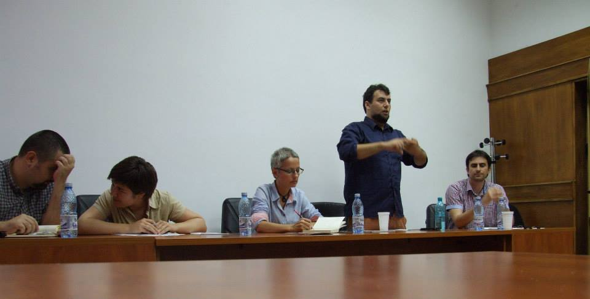

Dezbatere publică București
Sala de consiliu, Facultatea de Sociologie și Asistență Socială,
Miercuri, 26 iunie, ora 18:30

„E timpul ca amenzile să fie proporționale cu veniturile?”
Echipa afirmatoare: George Vișan (analist politic, publicist și membru fondator la Civitas Politics) și Maria Antică (absolventă de Științe Politice, cu un master în Relații Internaționale, SNSPA)
Echipa negatoare: Andrei Panțu (editorialist la Vox Publica și specialist în Științe Politice și Relații Internaționale) și Șerban Pitic (membru ARGO și ARDOR Muntenia, finalist la Campionatul Mondial de Dezbateri pentru Studenți)
Moderator: Monica Mocanu, ARDOR
Monica Mocanu
Această dezbatere este parte a programului Closer2Oxford, care are din ce în ce mai mulți prieteni. O să vă rog să îmi permiteți să îi salut, rapid, pe cei câțiva dintre ei. Pe cei patru, pe care îi vedeți aici, lângă mine, o să îi las la sfârșit pentru că ei se vor “produce” imediat, în debate-ul de start al dezbaterii publice. Dar mai întâi câteva lucruri despre proiect: este un program de dezbateri online, de seminarii de lectură critică și dezbateri publice, cu care ARDOR iese în întâmpinarea nevoii și a comunității de debateri, dar și a comunității studențești din patru, din cinci centre universitare deja (București, Iași, Cluj, Timișoara, Sibiu) plus două centre din Republica Moldova, utilizând instrumentul debate-ului ca formulă de start și ca formulă de provocare intelectuală asupra unor subiecte de interes public. Despre subiectul despre care discutăm acum o să vă vorbesc un pic mai încolo.
Îmi face plăcere să îi salut pe Lorena și Victor, de la MemoPlus, compania Walmark. Ei sunt proaspeții susținători ai proiectului și vă voi dezvălui că datorită lor am și avut acele premii în această rundă și le mulțumesc, cu această ocazie. Vedeți că ei susțin și alte lucruri frumoase legate de cultură și de promovarea valorilor și ne bucurăm că au venit alături de noi. Lorena, dacă vrei să spui câteva cuvinte, sau...
Lorena Maria (MemoPlus, Walmark):
Vă mulțumim și noi că ne-ați invitat. Despre MemoPlus nu știu câte știți dar importante sunt proiectele pe care le susțin, cum este acesta dar și proiectul Români frumoși, despre care găsiți informații pe masă și afară, și vă invităm în online și în offline să aflați cât mai multe despre motivul pentru care ne aflăm aici.
Monica Mocanu (moderator)
Mulțumesc!
Subiectul de astăzi, ca să începem frontal, este dacă amenzile ar trebui să fie proporționale cu veniturile. Este un subiect care a ieșit la vot, într-un poll online, concurând cu alte două subiecte: unul despre politicile care ar putea, sau nu, să limiteze fenomenul de brain drain și celălalt legat de libertatea de acces asupra documentelor, produselor universităților. Acest subiect a câștigat, pe ultima sută de metri, bătălia, cumva, și prin urmare pe acest subiect a avut loc o dezbatere online despre care o să ne spună la un moment dat al doilea invitat al nostru, sociologul Barbu Mateescu, căruia îi fac cu mâna. O să ne spună câteva lucruri despre cum arată pattern-urile pe subiectele de debate online, dar o să îl las mai târziu, a spus că vrea să vorbească după debate.
Pentru a începe discuția, așa cum facem de obicei, începem cu un debate, în care avem ca invitați, de la dreapta la stânga, două platforme care au acceptat să vină: George Vișan de la Civitas Politics și Andrei Panțu de la Vox Publica, însoțiți de doi colegi de-ai mei, mai mult sau mai puțin debateri consacrați: Șerban Pitic, pe care multă lume de aici îl cunoaște, și încheind cu Maria Antică, noua prietenă a ARDOR, care va și începe dezbaterea.
Maria Antică (afirmator 1) – discurs 1
E bine dacă mă ridic sau, dacă nu vă deranjează, al putea sta foarte bine și jos. O să rămân în picioare pentru că dacă dau din mâini mai mult s-ar putea să vă conving mai bine decât cu ce scot pe gură. Mai puțin inițiată în debate-ul online, abia astăzi inițiată în cel face to face așa că dacă veți vedea vreun soi de emoție sau bâlbâială, scuzele mele de pe acum.
În altă ordine de idei, noi ar trebui să susținem astăzi, și asta vom susține, că amenzile ar trebui să fie sau să devină proporționale cu veniturile și avem trei argumente principale. În primul rând, de ce amenzile? Nu ar mai fi și alte metode coercitive sau, mă rog, de prevenție a efectelor? Păi, amenzile funcționează și voi reveni mai târziu cu mai multe exemple care să susțină ipoteza asta. În al doilea rând, ar trebui să știm despre ce amenzi vorbim, pentru că nu putem să generalizăm și să extrapolăm așa, într-un spațiu vid, și vom aduce în discuție faptul că ne referim strict la amenzile de circulație, deși știu că asta a fost tema principală în dezbaterea din online. Am fi vrut să extindem dar considerăm că este o discuție foarte importantă tocmai din cauza gravității accidentelor de circulație și din cauza, sau datorită beneficiilor pe care o astfel de măsură, și anume proporționalitatea amenzilor cu veniturile, ar putea să o aibă, eu știu, în micșorarea numărului de accidente. Și în al treilea rând, poziția noastră este că, deși ca o consecință a aplicării unui astfel de principiu s-ar putea spune că nu s-ar mai respecta egalitatea în fața legilor câtă vreme îi tratezi pe oameni diferențiat pentru aceeași infracțiune, noi susținem că este necesară proporționalitatea amenzilor cu veniturile tocmai pentru că ar asigura și o egalitate a efectelor pe care astfel de măsuri le-ar avea, și nu numai în calitate juridică, strict în fața legii.
Acestea fiind spuse, dacă nu vă supărați cred că v-aș putea, deși nu vreau să vă șochez atât de tare, dar sunt convinsă că toată lumea știe că una dintre definițiile oamenilor, sau al omului în general, vine de la Aristotel care spunea că omul este un animal social, un animal politic. Surprinzător, lucrul acesta a fost demonstrat, cumva, odată cu trecerea timpului dar ce relevanță are că omul este un animal social cu treaba cu amenzile? În fond, care-i legătura? Păi, am putea pleca de la rolul pe care îl au amenzile sau, mă rog, de la scopul pe care astfel de amenzi îl are în vedere atunci când sunt aplicate. Și din punctul nostru de vedere, amenzile au două roluri: unu – acela de prevenție sau, eventual, de coerciție, ceea ce înseamnă cumva un rol instrumental al amenzilor, și în al doilea rând un rol normativ, un rol care e menit cumva să creeze niște reguli morale, dacă îmi permiteți. Oamenii reacționează foarte bine la recompense, la pedepse, la răsplăți și temerea cea mai mare este de sancțiune pentru că sancțiunea, în general, atrage asupra sa în primul rând un cost practic, care se reflectă în amenda financiară și, în al doilea rând, un cost social în sensul în care dacă tu, ca individ, nu ești conectat sau dacă încalci, cumva, niște reguli care sunt general acceptate de societate, practice vei fi sanționat în raport cu statutul tău de om, de cetățean cinstit în acea țară. Există niște academicieni din Statele Unite care au demonstrat printr-un studiu pe care l-au derulat în anii 2000 că amenzile sunt mult mai benefice decât detenția pentru că, în studiul lor empiric au demonstrat că cei care au fost închiși, de exemplu, au recidivat în proporție de mai mult de 50% decât cei care au fost sancționați prin amenzi.
Revenim la genul de amenzi pe care noi îl avem în vedere, și anume amenzile de circulație. De ce cele de circulație și nu altele? Păi pentru că gravitatea accidentelor de circulație este extrem, extrem de mare. În România, anul trecut, au fost 2000 de morți și 9000 de răniți, conform statisticilor Politiei Rutiere Române, comparativ cu cei din Afghanistan care au murit: 20. Nicio legătură? Toată legătura pentru că e vorba de siguranța cetățenilor români, oameni care pe teritoriul României nu ar trebui să fie expuși la riscuri, mor într-o cantitate mult mai mare decât cei care sunt expuși la riscuri foarte mari.
Pentru egalitatea consecințelor îl voi lăsa pe colegul meu să vă explice mai mult pentru că mi s-a terminat timpul. Mulțumesc.
Cross examination 1
Șerban Pitic (negator 1): Atunci o să am eu o întrebare: diin punctul tău, sau din punctul vostru de vedere, cam în ce proporție realistă oamenii foarte bogați sunt responsabili pentru accidentele de circulație?
Maria Antică (afirmator 1): Noi nu spunem că doar oamenii bogați sunt responsabili pentru accidentele de circulație. Poziția noastră este că oamenii bogați, și în fond, probabil că aici se duce toată discuția: că oamenii bogați nu sunt pedepsiți echitabil sau, mă rog, consecințele pe care oamenii bogați le suportă pentru încălcarea legii nu sunt la fel de mari ca pentru cei care nu au același venit. Și atunci s-ar putea ca pedeapsă primită să nu mai fie percepută ca o pedeapsă.
Șerban Pitic (negator 1): Ok, și-atunci întrebarea mea de follow up ar fi: și-atunci n-ar fi correct ca toate prețurile să fie proporționale cu veniturile pentru ca efectele să fie resimțite egal de toată lumea?
Maria Antică (afirmator 1): Noi avem în vedere doar amenzile privitoare la circulație pentru că acestea sunt cele mai grave. Dacă am extrapola, bineînțeles că s-ar putea aplica principiile astea dar interesul acum ar fi să scădem, cumva, numărul de accidente care e din ce în ce mai mare sau, mă rog, e la cote ridicate.
Serban Pitic (negator 1) – discurs 2
Bună ziua, doamnelor și domnilor, sau bună seara, e seară deși e lumină. Aș vrea să vă vorbesc despre câteva lucruri care mi se par foarte importante in dezbaterea de astăzi. În argumentele proprii, în argumentele noastre constructive, o să vă vorbim în primul rând despre cum e o problemă falsă, e o cauză falsă identificată a problemei morților din cauza accidentelor de circulație. Care e o problemă reală. Credem că e o problemă faptul că mulți oameni mor pe șosele. Credem că e o problemă într-adevăr, că mersul cu mașina pare să fie mai periculos decât multe alte lucruri pe care le considerăm, în general, periculoase, cum ar fi terorismul, cum ar fi războaiele. E o problemă dar noi spunem că cauza este identificată greșit la nivelul măsurii ăsteia, în general. În al doilea rând, vrem să vă vorbim despre cum sistemul este injust. Sistemul propus de echipa afirmatoare este un sistem injust pe care nu ar trebui să îl acceptăm chiar dacă am presupune că efectele ar fi cumva benefice, pentru că pur și simplu transmite un mesaj pe care statul nu ar trebui să îl transmită.
Dar înainte de asta aș vrea să vă vorbesc despre câteva din lucrurile pe care le-am auzit în primul discurs al echipei afirmatoare. Bun, de la început am auzit discuția asta că ar trebui să existe o egalitate de efecte, o egalitate a rezultatelor sau a ceea ce resimte fiecare om pedepsit de amenzi. Câteva probleme aici. În primul rând, noi spunem că însuși sistemul economic în care trăim respinge ideea egalității efectelor pentru că prin simplul fapt că lucrurile au prețuri egale pentru toată lumea înseamnă că un om mai sărac resimte un efect pozitiv mult mai greu decât un om mai bogat. Pur și simplu există o inegalitate a efectelor. Noi spunem că lucrul ăsta nu poate fi atins, în sine, în societatea în care trăim. Noi spunem că dacă o facem, pur și simplu, la nivelul amenzilor, nu înseamnă nimic. Înseamnă pur și simplu că trăim într-un spațiu inconsecvent în care încercăm să aplicăm egalitatea efectelor într-o anumită instanță, dar nu o aplicăm în celelalte instanțe. Noi spunem că dacă echipa afirmatoare ar vrea să susțină asta, ar trebui să susțină de ce, cum și dacă ar trebui să implementăm egalitatea efectelor în general în societate, pentru că noi spunem că dacă nu se face lucrul ăsta în general, nu vedem de ce ar trebui făcut aici.
Mai mult decât atât, noi spunem că nu e, de fapt, o inegalitate a efectelor. De ce? Și aici cumva, vreau să intru în primul meu argument despre cum e o cauză greșită. Noi spunem că răul social cauzat de accident nu este mai grav atunci când este făcut de un om bogat decât dacă e făcut de un om sărac. Noi spunem că motivul pentru care aplicăm sanțiuni penale, în general, este pentru o măsură de apărare socială în general. Pentru că vrem să pedepsim și să prevenim pentru un rău social cauzat. Noi spunem că pedeapsa trebuie să fie proporțională cu răul social cauzat, nu trebuie să fie proporțională cu cât de mult resimte pedeapsa persoana în cauză. Noi spunem că dacă am presupune asta, presupunerea ne-ar duce la ideea că bogații sunt, cumva, de vină pentru că sunt bogați, sau că bogăția în sine este o vină și noi spunem că asta nu e ceva legitim. Noi spunem că, la sfârșitul zilei, ce trebuie să urmărim printr-o pedeapsă este să urmărim pedepsirea răului social sau o prevenție eficientă.
De ce nu creăm o prevenție eficientă? Pentru că cauzele reale ale faptului că avem accidente nu este faptul că bogații fac foarte multe accidente plătind amenzi pe bandă rulanta. În primul rând, noi spunem că majoritatea oamenilor care fac accidente nu sunt oameni bogați. Sunt oameni cu venituri medii sau mici. Mai mult decât atât, spunem că de ce în România există o problemă mare cu respectarea regulilor de circulație este pentru că poliția nu își face datoria, nu este suficient de prezentă și pentru că există corupție masivă în sistemul impunerii amenzilor pentru încălcarea regulilor de circulație. Ori, mai mult decât atâta, ce spunem noi este că genul ăsta de măsură încurajează exact genul de șmecherie care face de cele mai multe ori pe cei nu neapărat bogați dar pe cei cu pile, cu un anumit tip de statut care le permite să scape de pedepse să reușească să facă asta și mai mult. Pentru că ceea ce face este că încurajează ca omul bogat, să zicem, când este prins cu o încălcare a regulilor de circulație, va avea, în primul rând, o motivare să încerce să dea șpagă. Și șpaga aceea s-ar putea să fie mai mare pentru că deja costul amenzii e foarte mare. Șpaga fiind mai mare, este și o motivație în plus pentru agentul de circulație să primească șpaga asta în plus. Deci noi spunem că corupția, care este principalul motiv pentru care avem o lipsă de respectare a amenzilor de circulație, este ceva care este încurajat de măsura despre care discutăm.
Deci, ce v-am spus este că, în primul rând nu rezolvăm problema reală pentru că majoritatea oamenilor care comit accidente de circulație nu sunt oameni foarte bogați, nu despre ei vorbim. În al doilea rând, oricum în cazurile astea încurajăm corupția și, în al treilea rând, noi spunem că asumarea unei amenzi nu este o chestiune de calcul rațional. Nimeni nu își pune problema: haide să încalc regula asta de circulație pentru că îmi permit să plătesc amenda. Motivele pentru care apar regulile de circulație sunt pentru că: unu, oamenii nu se gândesc la consecințe, oamenii acționează impulsiv și pentru că trăim într-o cultură în care regulile de circulație nu sunt respectate pentru că nu există o cultură a respectului față de lege. Astea-s lucrurile care ar trebui schimbate, nu proporționalitatea amenzilor.
Cross examination 2
Maria Antică (afirmator 1): Ai vorbit la începutul discursului tău despre sistemul economic actual care, de fapt, este inegal în sine, și de ce am încerca să impunem un soi de egalitate în cel juridic și ai dat un exemplu că săracii și bogații plătesc la fel de mult pentru același produs, asta a fost ideea, nu? Ești de acord că poți cumpăra o pâine atât la un leu și în același timp una la cinci lei, având pe piață mai multe opțiuni, atât pentru bogați, cât și pentru săraci?
Șerban Pitic (negator 1): Da, dar asta e irelevant. E vorba că același produs e plătit cu același preț, pentru că aici plătești un produs ca să primești un beneficiu. Aici trebuie să plătești o amendă pentru că ai cauzat un rol social. Ceea ce am spus cu egalitatea bogaților și a săracilor pur și simplu înseamnă că în sistemul nostrum economic nu este în sine admisă ideea egalității rezultatelor. De ce să facem aici o excepție?
Maria Antică (afirmator 1): Pentru că avem în vedere consecințele și, eu știu, stoparea acelor infracțiuni. Dar revin la ideea cu viteza: că dacă depășești viteza, un om sărac și unul bogat vor plăti aceeași amendă pentru că așa este corect. Ești de acord, totuși, că dacă depășești viteza și calci pe cineva la trecerea de pietoni, cel sărac care va plăti o amendă fixă, o va simți mult mai mult decât cel bogat, care permite să dea acea sumă și care, la rândul lui, nu va simți niciun fel de consecință și care nu va simți nicio răspunere în conștiința lui pentru faptul că a plătit o sumă mică iar costurile nu au fost foarte mari că a omorât pe cineva.
Șerban Pitic (negator 1): Nu, în practică nu pentru că pur și simplu, dacă omori pe cineva, nu plătești amendă, te duci la pușcărie, ți se ia carnetul iar astea sunt, genul de costuri pe care le plătește orice om, indiferent cât de bogat e.
Maria Antică (afirmator 1): Să spunem că n-ai călcat pe nimeni la trecere dar faptul că ai depășit viteza cu 50 de km pe oră și ai expus oamenii din jur la un pericol de accidentare…
Șerban Pitic (negator 1): Asta e posibil să se întâmple, deși cred că, unu: asta se întâmplă foarte rar și, în al doilea rând, faptul că există pedepse care sunt cu adevărat grave pentru accidentarea cuiva reprezintă demotivare destulă și pentru un om bogat să nu depășească limita de viteză. Până la urmă ne interesează rezultatele: dacă moare cineva sau nu.
George Vișan (afirmator 2): Șerban a făcut la final o afirmație de genul că regulile în România, normele legii, cele sociale sunt încălcate nu în urma unui calcul rațional, cost-beneficii. Problema totuli e, nu crezi că există totuși un raport de tip cost-beneficiu? Adică dacă o persoană știe că nu va fi pedepsită sau că pedeapsa nu e atât de intensă, satisfacția pe care o va deriva el din încălcarea legii va fi oarecum mare?
Șerban Pitic (negator 1): Nu cred că asta e relevant pentru că ce se întâmplă este că oamenii simt că nu vor fi pedepsiți din cauză că nu se aplică pedepse, sau pentru că se ia șpagă și se scapă foarte ieftin. Ar fi mult mai eficient, de exemplu, dacă am avea pedepse precum luarea carnetului, precum pușcăria pentru lucrurile cu adevărat grave.
George Vișan (afirmator 2): Există, se poate lua carnetul, nicio problemă, dar se poate, cum s-a mai dovedit în o groază de cazuri particulare, se poate conduce mașina și fără carnet și chiar s-au comsi accidente de persoane care aveau permisul reținut. Nici aceasta nu este o măsură coercitivă coerentă, până la urmă.
Șerban Pitic (negator 1): Problema, până la urmă, rămîne faptul că nu se aplică pedepsele. Și nu rezolvați faptul că nu se aplică pedepsele aplicând amenzi proporționale. Oricum se revine la o categorie foarte restrânsă de oameni pentru că majoritatea oamenilor au venituri medii sau mici și ei în continuare vor plăti aceleași amenzi, pentru ei nu se schimbă nimic, în majoritatea situațiilor nu se schimbă absolut nimic.
George Vișan (afirmator 2) – discurs 3
Bună seara. Voi continua apărarea cauzei noastre acolo de unde a pornit colega mea. Noi când ne-am gândit la acest sistem nu am avut neapărat în vedere o aplicare generică asupra tuturor infracțiunilor de circulație. Ne-am gândit la infracțiunile cele mai grave, acele depășiri de viteze, de exemplu, cu mai mult de 20 de km la oră, acțiuni care sunt de mare risc, care implică neglijență și lipsă de respect atât față de lege, cât și față partenerii de trafic. Ne-am gândit să aplicăm această sancțiune severă, amenda proporțională, tuturor participanților la trafic care fac aceste probleme, indiferent de venituri dar calibrând această amendă conform veniturilor lor, această contravenție va avea un efect pozitiv la final. Va crește costurile, indiferent de cine face aceste infracțiuni, va crește costurile lor față de restul societății și în final va duce poate, sperăm noi, la o scădere a tragediilor care au loc pe drumurile României.
Noi vedem acest mecanism în primul rând cu scop descurajator. În momentul în care știi că indiferent de veniturile tale, vei plăti o amendă echivalentă cu 10% din salariul tău sau din veniturile tale lunare calculate, îți va veni mai greu să apeși pedala de accelerație. Îmi veți spune că e un pic mai dificil de aplicat acest lucru. Eii, nu e chiar. Avem exemplul Finlandei unde o asemenea lege există: în momentul în care un șofer este detectat de poliție prin radar sau prin patrule că el depășește viteza legală cu mai mult de 20 de km la oră, este oprit, poliția are acces la baza de date a ANAF-ului finlandez și i se servește pe loc o amendă proporțională cu 10% din veniturile sale. Nu vreau să complic foarte mult, să creăm prea multă birocrație, se va baza foarte mult pe venitul lunar și se va aplica sub forma unei taxe fixe. Amenda va fi de 10% dintr-un salariu sau dintr-un venit lunar.
Legat de problema justeței, noi nu acuzăm bogații că sunt de vină pentru accidente sau spunem că ei sunt de vină pentru depășirea legală. Nu dorim să atribuim vini care nu există. Pe de altă parte, persoanele care au mașini și care sunt implicate în trafic, indiferent de venituri, știu că există în lege niște remedii serioase pentru cei care încalcă legea, atunci se vor gândi mai cu atenție la modul cum conduc și dacă și dacă decid să depășească viteza legală.
În altă ordine de idei, a fost spus de către echipa negatoare faptul că noi dorim un fel de egalitate de rezultate. Dacă prin acest lucru înseamnă că sunt mai puține accidente ne asumăm această egalitate. Indiferent dacă ești bogat sau sărac sau dacă ai venituri medii, trebuie să iei în considerare faptul că există la final amenzi serioase pentru încălcarea regulilor din trafic.
Pe de altă parte, nu va fi doar un instrument, cel puțin nu credem că va fi singurul instrument care va ajuta la îmbunătățirea situației actuale în privința accidentelor de circulație. Credem și noi că această măsură ar fi eficientă dacă ar face parte dintr-un pachet mai larg de măsuri.
Cross examination 3
Andrei Panțu (negator 2): Ai dat exemplul Finlandei. Totuși, ca o remarcă, aș spune că societatea finlandeză este la ani lumină de cea românească, o societate structurată cu totul și cu totul altfel, are o clasă de mijloc destul de solidă, au avut un parcurs foarte lung până să ajungă aici. De ce n-am încerca să ajungem ca Finlanda și să aplicăm după aceea proporționalitatea amenzilor?
George Vișan (afirmator 2): Când am folosit exemplul Finlandei…
Andrei Panțu (negator 2): Sau oricare alta, Elveția parcă mai implementează, Danemarca…
George Vișan (afirmator 2): În general, amenzile proporționale cu veniturile sunt practicate în statele nordice, ca publicul să fie conștient de acest lucru. Pe de altă parte, eu cred că având în vedere situația din România, România se află pe locul 5 în ceea ce privește morții din accidentele de circulație, credem că o asemenea măsură ar putea fi utilă. Nu cred că i-am sărăci extraordinar pe cei care au mașini, indiferent de veniturile lor. Credem, însă, că ar fi o garanție în plus a respectării legii. Și mai trebuie spus următorul lucru: în momentul în care achiziționezi o mașină, indiferent că ești în România (în Finlanda, de exemplu, costurile achizionării unei mașini sunt mult mai mari decât în România), ai un anumit statut social, mai ales în România, unde mașina este considerată un simbol al statutului social. Deci trebuie să fii conștient că acest “simbol” vine cu anumite costuri, primul cost nefiind neapărat cel pe care îl plătești la reprezentanță, sau la dealer, ci costul față de lege. Că dacă folosești acest mijloc de circulație în mod ilegal, vei plăti.
Monica Mocanu (moderator): Atât, astea au fost, cumva, extra. M-ați luat prin surprindere. Vreau discursul tău dar în condițiile astea, și ei vor putea să îți adreseze o întrebare la final.
Andrei Panțu (negator 2): Să-mi spuneți dacă mă vedeți, dacă mă auziți sau mă ridic în picioare…
Amenzi proporționale cu veniturile, sună foarte bine în teorie, s-ar urmări o egalitate a efectelor și probabil că ar putea să funcționeze în țările nordice, în Elveția. În România, însă, avem anumite probleme care ne-ar împiedica să implementăm amenzile proporționale. Cea mai importantă ar fi evaziunea fiscală. Avem, chiar și în cele mai optimiste evaluări, cam 30% din economie este subterană, deci avem foarte multe venituri nedeclarate, la negru sau la gri. Deci doar o parte din bani sunt puși pe cartea de muncă, restul se plătesc pe sub masă iar asta ne-ar duce, pur și simplu, la foarte multe inechități dacă am aplica amenzile proporționale. Pur și simplu, cei care sunt plătiți la negru sau la gri ar scăpa mult mai ușor decât cei care au fost destul de fraieri încât să își declare veniturile.
Altă inechitate ar veni din faptul că, din multe motive pe care nu mai stau aici să le discut aici, veniturile mari nu sunt întotdeauna corelate cu averi mari și invers: avem cetățeni cu venituri mari dar cu resurse, cu avere destul de mică, pe de altă parte avem mulți cetățeni care au averi mari însă nu au venituri, sau nu sunt trecuți cu venituri. Din cauza asta ar fi, iarăși, nedrept în România să aplicăm amenzi proporționale cu veniturile. Am nedreptăți, inevitabil, pe unii.
Că tot vorbeam de evaziune fiscală, asta mă duce la un alt posibil efect negativ al aplicării amenzilor proporționale, și anume, foarte simplu, lumea ar fi încurajată să-și declare și mai puțin veniturile. Ar fi încă un motiv în plus pentru a munci la negru sau la gri, pentru a nu mai avea salariile puse pe cartea de muncă sau a avea 8 milioane, 10 milioane, iar restul să fie plătiți neoficial.
Un alt motiv pentru care, la modul cel mai general (acum nu vorbesc numai de România, poate mai ales de România pentru care n-ar functiona atât de bine) este birocrația la care ne-ar aduce o asemenea măsură. Ar însemna o amendă proporțională cu veniturile, ar însemna noi formulare, noi drumuri pe care șoferii ar trebui să le facă, stat la cozi la alte ghișee și așa mai departe, ar îngreuna excesiv situația pentru șoferi, în genere. Din toate motivele astea nu cred că ar avea, per total, efecte pozitive amenzile proporționale. Cred că avem alte cauze care stau la baza accidentelor multiple din România, care pot fi atacate altfel. De exemplu, prin examenul auto, care a și început să fie din ce în ce mai strict în ultimii ani: se ia mult mai greu carnetul, mai ales la examenul de traseu. Sigur, efectele se vor vedea în timp, încă mai avem mulți șoferi care și-au luat examenele așa cum le-au luat: dat șpagă și așa mai departe, le-au trecut relativ ușor, nu au avut examenul atât de greu.
Și așa, ca o ultimă măsură, pe care aș propune-o în locul amenzilor proporționale cu veniturile, ar fi pur și simplu niște amenzi proporționale și sancțiuni în general, inclusiv de ordin penal atunci când este cazul, proporționale cu gravitatea delictului, cu gravitatea încălcării regulilor de circulație. Cred că asta ar reduce mult mai degrabă numărul accidentelor. Mulțumesc!
Cross examination 4
Maria Antică (afirmator 1): Spuneai, la un moment dat, că un asemenea sistem de aplicare a amenzilor proporționale nu ar putea funcționa la noi din mai multe motive expuse de tine. Să presupunem că am avea un sistem în care ar funcționa, ca teoria s-ar aplica și în realitate, ai considera în continuare că nu ar putea să ducă la scăderea numărului de accidente în România?
Andrei Panțu (negator 2): Mai avem mult până acolo și cred că sunt și multe alte cauze care stau la baza numărului mare de accidente, inclusiv cultura noastră, lipsa unor campanii duse la nivel național de conștientizare a șoferilor în legătură cu responsabilitatea lor, cu gravitatea posibilelor rezultate ale accidentelor și asta ar fi, cred eu, mult mai important.
Maria Antică (afirmator 1): Am înțeles. Și ca o mică întrebare, apropo de campanii, de exemplu campaniile ar fi mult mai luate în serios și mult mai interiorizate decât faptul că ar trebui să scoți din buzunar o sumă exorbitant de mare ca să plătești pentru fapta pe care ai comis-o? Adică, comparativ, care ar avea efectul imediat, cel puțin, mai eficient? În Finlanda s-a dat o amendă de 200.000 de Euro pentru depășirea vitezei cu 20 de km pe oră. Pentru orice avere, oricât de mare ar fi, 200.000 de Euro este o sumă destul de mare.
Andrei Panțu (negator 2): Foarte adevărat dar asta i-ar descuraja doar pe cei cu veniturile într-adevăr foarte mari
Maria Antică (afirmator 1): și medii…
Andrei Panțu (negator 2): Venituri medii nu sunt chiar așa de multe. Nu avem o clasă de mijloc așa de consolidată ca în Finlanda.
Monica Mocanu (moderator): Aș propune să votăm la sfârșitul întregii discuții din mai multe motive pe care vi le voi spune pe parcurs. Vă mulțumesc (vorbitorilor)! O cafea ne trebuia. Eu știu motivele declarate pentru care invitații din marginile extreme au venit să facă debate. Știu motivele pentru care mulți dintre voi faceți debate dar aș vrea să rămânem la subiectul amenzilor, deocamdată. Cred că mulți dintre voi aveți întrebări, sau sper să aveți întrebări. Aș vrea să îl invit pe Barbu să ne spună cum a fost subiectul acesta abordat în dezbaterea online și după aceea să vă auzim vocile tuturor.
Barbu Mateescu (sociolog): Bună seara tuturor, mă numesc Barbu Mateescu, sunt sociolog, 99 la sută sociolog, 1 la sută debater. În clipa de față eu realizez un studiu prinvind valorile care au fost atinse în dezbaterile online de-a lungul timpului, inclusiv pe aceasta temă și lucrurile pe care o să le aduc în discuție nu sunt neapărat legate de componenta de debate cât cum s-au poziționat, în genere, afirmatorii și negatorii față de subiecte. Care au fost rutele, daca tot se discută în termeni rutieri, șoselele utilizate pentru a încerca să îi convingă pe arbitri și să obțină victoria.
Această temă a fost atinsă și în dezbaterile care au avut loc în Republica Moldova sau, mai bine spus, având în vedere că a fost totul online, au fost echipe care erau din Republica Moldova. Ca remarcă generală privind dezbaterea de astăzi, dacă aș fi văzut transcriptul ei și n-aș fi știut că ea a avut loc la București, aș fi spus că ea a avut loc în Republica Moldova pentru că foarte multe din temele, sau modul în care a fost discutată tema, și anume această noțiune de egalitate în efecte, efecte asupra celui care încalcă legea și în ce măsură oamenii bogați internalizează această măsură la fel de mult precum cei cu venituri medii și mici, cam așa s-au poziționat echipele din Republica Moldova și, într-o măsură mai mică, și cele din România. Echipele din România au vorbit, și ca să vă spun aici, marea majoritate a echipelor din România, mai ales acelea afirmatoare, s-au concentrat pe justețea socială și economică a unui sistem proporțional. Deși e relativ acest exemplu, ceva de genul de ce un impozit progresiv este mai bun decât o cotă unică. Deci s-a ajuns inclusiv la argumente, la discuții foarte puternice despre capitalism, despre ce înseamnă să ajungi bogat în România, și nu într-un caz ideal, în ce măsură societatea trebuie să răsplătească averea. Dezbaterea a fost mult mai politică și ideologică, dacă vreți, decât cea de astăzi, care mi s-a părut că s-a axat mai mult pe componenta psihologică, sau chiar juridice. Sunt foarte interesat să aud cum va curge dezbaterea care începe acum, dezbaterea neoficială dar asta voiam să vă spun, a fost o dezbatere foarte diferită de majoritatea celor din online și de cu totul altă natură.
Intervenții public
Bianca Dragomir: Aveți niște date, studii care să releve faptul că astfel de amenzi au scăzut numărul incidentelor rutiere în rândul bogaților în state precum Finlanda?
Maria Antică (afirmator 1): Nu aș putea să îți dau date statistice care să demonstreze că a scăzut numărul incidentelor în rândul bogaților dar pot să îți spun că în studiul făcut în Finlanda de poliția lor a arătat că cel puțin 60 la sută din populația țării este de acord cu această măsură.
Claudiu Toader: Eu am ceva de spus pentru fiecare echipă în parte, în primul rând pentru echipa afirmatoare. Am auzit statistica aia din partea primului vorbitor al echipei afirmatoare cum că închiderea nu ar fi la fel de eficientă precum este o amendă. Mie nu mi se pare că asta-i neapărat corectă pentru că dacă ar fi să o luăm așa, atunci ar trebui să amendăm oamenii pentru omucidere și asta ar fi mai productiv. Eu nu consider că asta e adevărat ci mai degrabă, faptul că oamenii recidivează este din cauza naturii motivului pentru care ești închis. Adică, de regulă motivele pentru care iei amendă nu sunt atât de severe pe cât sunt chestiile pentru care ești închis, ca atare chestiile pentru care ești închis nu le faci din întâmplare ci din cauza unui stil de viață și ăsta-i motivul pentru care recidivează mai mult oamenii care sunt închiși.
Maria Antică (afirmator 1): Într-adevăr, studiul pe care l-am citit eu spunea că oamenii care sunt închiși recidivează într-o măsură mult mai mare decât cei care primesc amenzi. În fond, era vorba despre ce se întâmplă după ce primești un stil de pedeapsă. Într-adevăr, faptul că ești închis acolo…s-ar putea să mai ai și alte probleme și s-ar putea să vrei să te răzbuni, sunt mai multe cauze dar ce contează, sau ce a contat pentru mine a fost efectul: ce efect a avut, sau ce ai făcut după ce ai primit o pedeapsă? Dacă ai făcut închisoare ai trecut deja prin chinul ăla și nu te mai costă nimic să o mai faci încă o dată fără nicio problemă. Asta e pentru o anumită categorie de oameni, dar pentru oamenii normali, eu știu, mediocri, ăia care nu prea fac lucruri interesante, faptul că primesc o amendă s-ar putea să fie o sancțiune mult mai mare din punct de vedere social și financiar . Oamenii ăia poate nu ar ajunge niciodată să facă închisoare. Pentru ei, faptul că au primit o amendă e o pedeapsă destul de mare, în sensul ăsta.
Claudiu Toader: A doua întrebare este pentru Șerban care spune că bă, da oamenii ăștia care fac chestii nasoale nu spun că o să calce pe pedală pentru că își permit să plătească amenda. Unde, dacă ăsta e cazul și amenzile nu sunt folosite ca deterrent și efectul de deterrent nu contează, atunci orice sancțiuni am pune pentru speeding și alte infracțiuni legate de trafic ar fi complet ineficiente. Mai degrabă, cum văd eu problema, este că în momentul în care punem o amendă nu o facem pentru ca oamenii ăia o să se întoarcă magic la viață doar pentru că plătesc o amendă, nu plătim o amendă pentru că trebuie să plătim o amendă ci pentru că trebuie să pedepsim persoana respectivă, unde impactul este complet diferit. Dacă o persoană are un venit de 20.000 de Euro pe an nu va resimți amenda aceea minusculă unde o persoană care are un salariu de 8 milioane va simți amenda respectivă iar mie mi se pare că asta era dezbaterea propriu-zisă.
Șerban Pitic (negator 1): În majoritatea cazurilor, cel mai mare factor motivant pentru a călca pe pedală e faptul că nu se aplică pedepse, nu faptul că pedeapsa e prea mică. Pentru că marea majoritate a oamenilor nu au venituri care ar coresponda cu o amendă de 200.000 de Euro, vorbim aici de ceva de genul top 5 la sută. Pentru majoritatea oamenilor, oricum, discuția asta nu se aplică deloc fiindcă aceia ar plăti același tip de amenzi pe care îl plătesc și acuma. Pentru cei care au, într-adevăr, bani și pentru care amenzile de 5 milioane nu înseamnă nimic ce susțineam și ce susțin eu este că, unu: majoritatea nu încalcă regulile pentru că nu vor să le încalce, există o minoritate care le încalcă, așa cum o fac și ceilalți, negândindu-se la consecințe fiindcă-s nervoși, fiindcă se simt ei foarte tari și nu se gândesc la consecințe, există genul ăsta de comportament irațional și pe ăsta nu poți să îl previi cu niciun fel de pedeapsă. Și da, ai dreptate, după aia rămâne rolul punitiv dar în ceea ce privește rolul punitiv, este corect să pedepsim răul social cauzat. La fel cum eu nu am o vină pentru că-s mai bogat. Dacă am creat un rău social, societatea trebuie să ceară de la mine același gen de lucru. Dacă eu se întâmplă să fiu, nu știu, o persoană mai…o persoană pentru care libertatea înseamnă mult mai mult decât pentru o altă persoană, asta nu înseamnă că trebuie să mi se aplice o pedeapsă diferită. Ăsta e genul de aprecieri care nu ar trebui făcute pur și simplu. Sunt bogat, sunt sărac, trebuie să fiu pedepsit pentru ceea ce am făcut. Ar fi absurd, să zicem, dacă se întâmplă ca cineva să calce prea tare pe pedală într-un moment oarecare să i se ia 200.000 de Euro, chiar dacă are milioane. Probabil banii ăia au deja o destinație.Orice om bogat nu își pune banii la saltea ci, mai degrabă îi folosesc. Sunt niște bani care probabil se iau din niște investiții, din niște destinații utile.
Măriuca Murariu: Apropo de ce spuneai, Șerban. Totuși, ce spuneai contrazice cumva felul în care funcționează sistemul. Contrazice un pic sistemul justițiar pentru că tocmai, se iau în considerare tot felul de contexte și de situații atenuante, să zicem. Dacă ești nebun și ai ucis pe cineva, contează că ești nebun, da? Astfel încât efectul pe care-l produci să fie, într-o formă sau alta, echitabil cu altcineva care poate a comis același lucru dar care nu primește aceeași pedeapsă. Deci nu se aplică neapărat ce spui și atunci argumentul de tipul “sistemul e corupt, sistemul e injust” ergo “nu contează ce tip de amendă impunem sau ce tip de coerciție impunem” ne face tuturor un dezavantaj, inclusiv vouă, pentru că susține că inclusiv cel care există nu funcționează. Cred că dezbaterea era mai mult despre ce tip de coerciție, chiar în cazul în care sistemul ar funcționa ideal, chiar în cazul în care n-ar fi corupție: ar fi mai bine să avem amenzi proporționale cu veniturile sau nu? Pentru că dacă spui “oricum e corupt, oricum vor fi șpăgi”, știi, nu puteți susține niciun fel de coerciție. Și de asta se leagă și de ce spunea Claudiu, cred că ai simțit aceeași chestie. Vreau doar să închei cu o informație pe care am aflat-o chiar înainte de a veni aici. Citeam în Ziarul Financiar că MAE are un proiect de lege prin care vor să întețească amenzile, felul în care ele se colectează, adică să existe inclusiv plată online, procesul verbal să fie cu semnătură de primire, deci să faciliteze colectarea pentru că, un fapt curios în România, numai un sfert din amenzile care au fost date în cazul amenzilor de rutiere au fost colectate. Deci numai 25 la sută sunt, de fapt, colectate în total.
George Vișan (afirmator 2): Da, este similar cu situația privitoare la amenzile date pentru impozite pentru că se acumulează și nu ai cum să le plătești, sau ca stat să le colectezi. Atunci când am gândit poziția noastră m-am gândit și la aspectul ăsta. De aceea, cel mai simplu ar fi să existe o corelare în care ofițerul care dă amenda să aibă acces la baza de date a ANAF-ului, unde ești trecut cu salariul la zi sau cu sursa de venit și în momentul în care apare o discrepanță între ceea ce apare acolo și ai la fața locului, să se meargă mai departe. Mă gândeam și la spill over effects. Cred că în anumite situații este o măsură prin care descurajezi și evaziunea fiscală: în momentul în care vezi pe cineva care conduce un Bentley de 250.000 de Euro iar el apare în baza ANAF-ului că primește ajutoare de la statul român pentru că e sărac sau nu poate munci, deja acolo este ceva în neregulă și trebuie să se intervină. În opinia mea, amenda trebuie plătită pe loc și prin mijloace electronice tocmai pentru a scăpa de problema corupției și ca să existe și o garanție că, totuși, nu apare un fel de mică înțelegere între agent și contravenient, să fie înregistrată plata sau pur și simplu polițistul să stea în fața camerei de luat vederi a mașinii, dacă totuși mașinile de poliție au în momentul de față camere de luat vederi. În momentul în care există o probă video e cam greu să spui că nu s-a plătit. Cu cât ai o dovadă electronică solidă cu care e greu de contestat, mica corupție va dispărea și ea.
Șerban Pitic (negator 1): Aș vrea să fac și eu o precizare legat de chestiunea cu situațiile atenuante: nu-i așa ușor, e o distincție foarte importantă. Circumstanțele atenuante se referă la situații, la condiții care fac vina mai puțin vina mai puțin importantă sau care diminuează vina, accentuează vina în cazul celor agravante. Bogăția nu e genul ăsta de fapt, nu diminuează sau accentuează vina. Pur și simplu e vorba de un rău social egal pe care însă îl pedepsești mai mult pentru faptul că o persoană e bogată și de fapt acolo există o judecată de valoare, undeva în subsolul acestei politici, că bogații, cumva, au ceva ce nu merită. Și asta într-adevăr poate să fie o dezbatere interesantă dar cred că trebuie demonstrată ideea asta înainte de a o aplica.
George Vișan (afirmator 2): Nu sunt nici eu adeptul suspiciunii că bogații ar comite mai multe accidente, dar, dar, și aici îmi aduc aminte de un caz foarte recent în care un tânăr de 20 de ani, al cărui tată era bancher, a condus sub influența alcoolului și a ucis două persoane iar mașina de poliție a încercat în primul rând, să le ofere mită polițiștilor și când a văzut că nu acceptă mita, a început să îi amenințe cu părintele care era șef de bancă și, deci, o să aveți probleme. Există, cred, anumite persoane, anumiți indivizi în România cu astfel de mentalități de aceea cred că uneori trebuie luate în considerare și aceste fapte.
Șerban Pitic (negator 1): Aș vrea să fac un mic comentariu. Da, vorbim de o persoană bogată care a fost nepăsătoare și agresivă dar putem să vorbim și de o persoană săracă care era nepăsătoare și agresivă și să-i amenințe cu violența. Nu poate să amenințe cu bani dar poate să amenințe cu violența. Banii sunt un instrument adică, din nou, vorbim de același gen de răspuns, de același gen de personalitate. Evident, nu putem susține că oamenii bogați nu doresc niciodată să facă rău, ideea este că nu putem folosi acest factor ca, cumva, să susținem o cauză, să presupunem că e o vină în plus pentru cei care sunt bogați.
Andrei Tiut: Bună seara, sunt Andrei Tiut de la Civitas Politics. Dacă înțeleg bine, echipa negatoare apasă pedala foarte tare pe ideea că pedeapsa trebuie să fie proporționată cu răul social provocat, corect? Și într-un anumit sens, ceea ce susțineți voi este implicit o justiție reparatorie, chit că nu plătești reparațiile înapoi către victimă ci către societate, este tot un tip de justiție reparatorie. Ori aici este o discuție interesantă pentru că, mă rog, în abstract, putem argumenta, dar în concret funcția reparatorie se practică în câteva societăți tribale: un Afganistan, un Pakistan, un Caucaz. În lumea din care facem noi parte, nu argumentez acum că e neapărat bine sau nu, dar lumea din care facem noi parte sistemul penal are ca scop prevenția. Aceasta se poate face în două moduri: prin teamă, și aici într-o anumită măsură cealaltă echipă a încercat să argumenteze că bogații se tem mai greu și nu îi învinovățim dar facem o observație că se tem mai greu, și pe urmă se bazează, deși mai puțin important pentru problema asta, pe reabilitare. Și atunci, din punctul meu de vedere, dacă vreți să vă bazați argumentul pe o justiție reparatorie, trebuie să vă asumați și acest fapt: că ne asemănăm cu acel tip de justiție și cu valori care în mod normal ne sunt străine.
Șerban Pitic: Noi nu ne bazam pe o justiție reparatorie, pur și simplu spuneam că în cadrul sistemului de justiție pe care îl avem noi, care este unul bazat pe prevenție mai degrabă, există și principiul egalității în fața legii. În dreptul penal, în mod deosebit, există conceptul de pedeapsă care trebuie să fie proporțională cu răul făcut, adică nu trebuie să fie disproporțional, cineva să fie pedepsit mai mult pentru același rău social făcut. Adică, în sistemul nostru penal și în sistemul nostru de justiție prevenția nu e singurul factor, trebuie să fie și echitabil, există și o anumită idee de egalitate în fața legii. Și dacă vorbim de o prevenție, realist vorbind, teama nu este un factor de motivare foarte bun.
George Vișan: Ba da, dacă nu ar exista frica de rigoarea legii cred că în nicio societate o lege nu ar fi aplicată. Există, într-adevăr, și acordul voluntar dar în esență, fără teamă, legea nu poate fi aplicată.
Șerban Pitic (negator 1): În majoritatea situațiilor când legea se respectă e prin acordul dat. Și mai ales în societățile de care vorbim, în țările nordice, ăsta-i, de fapt, marele plus: că legea se respectă pentru că există un bind , oamenii acceptă normele și le îmbrățișează, le consideră ale lor și trebuie respectate. În România nu se tratează regulile așa și asta e, de fapt, diferența specifică.
Andrei Tiut: Dacă într-adevăr e atât de important principiul proporționalității cu fapta, de ce evoluează atât de mult pedeapsa în timp, de ce nu e nicio problemă ca eu, statul român, să te pedepsesc astăzi cu o amendă de 3 lei și mâine cu o amendă de 10 lei? Asta rupe principiul proporționalității și aruncă pedeapsa în zona prevențiilor: eu te pedepsesc astăzi cu 10 lei pentru că mă gândesc că este mai eficient, mâine am văzut că nu este eficient și are efecte perverse, scad înapoi la 5 lei.
Șerban Pitic (negator 1): Asta nu ține de proporționalitate. E vorba că cineva care a făcut ceva de 5 ori face un rău social mai mare…
Andrei Tiut: Nu, fix pe aceeași pedeapsă se schimbă codul penal și schimbă pedeapsa, asta spuneam eu.
Șerban Pitic (negator 1): Pentru că altfel nu ar putea să evolueze legile. E într-adevăr o problemă dar asta e valabil oricând se schimbă legile.
Roxana Marin: Ca să îi răspund lui Andrei, sunt mai multe motive pentru care se fac modificări codului penal : venitul mediu, creșteri, timpul, e un număr de factori care au un impact asupra modificării legilor, nu cred că… În fine, cred că s-a înțeles ce vreau să zic. Eu sunt Roxana Marin, sunt profesoara lui Claudiu la liceul Coșbuc. Ce vreau să zic: eu am votat…nu divulg. În fine, eu aș vrea să îmi afirm părerea cum că o poziție cum e cea a echipei afirmatoare pune în mare pericol răspunderea civică în rândul cetățenilor. Adică, dacă am aplica un sistem prin care bogații ar plăti mai mult pentru aceeași faptă comisă de un om mai sărac, am presupune în stilul acela ușor aroganto-platoniciano-ceva că bogații sunt mai deștepți, mai responsabili, mai “superiori”, ca să zic așa (mi-ați auzit ghilimelele, da?) și așa mai departe. Adică e un mare pericol acesta. Nu știu exact, în Finlanda ați zis că se aplică sistemul ăsta... No, acuma eu cred că oamenii ăia sunt egali de bogați, egal de corecți și egal de ok, adică e o societate care, crescând într-un comfort mai consecvent decât cel de care s-a bucurat o țară precum România, presupun că sunt diferențe mai mici, mai puțini notabile de la o categorie socială la alta. Pe când într-o societate precum e cea românească, un model ca acela prezintă niște riscuri foarte grave, adică așteptăm de la cei bogați să... Nu știu, e o inegalitate despre care cred că echipa negatoare a reușit să avertizeze destul de corespunzător și pentru care îi salut.
Andrei Panțu (negator 2): Da este, este. Adică dacă ne uităm numai la coeficientul Gini care măsoară inegalitățile, Finlanda e una dintre țările care stă cel mai bine în lume, are aproape 23, 24, pe o scară de la 0 la 1. România a sărit peste 30, cred că avea 33, ceva de genul ăsta.
Maria Antică (afirmator 1): Dacă îmi permiți, Roxana, ca un comentariu la ce ai spus tu, eu ce înțeleg este că o astfel de abordare ar antagoniza cumva clasele sociale care recunoaștem că există: cei bogați, cei săraci și clasele de mijloc, da? Asta e ideea? Care e riscul?
Roxana Marin: Nu știu dacă m-am dus atât de departe cu proiecția mea asupra efectelor. Pur și simplu mi se pare că principiul inegalității pe care se fondează o astfel de abordare e unul periculos și într-o societate în care oricum legea nu se respectă și așa mai departe, oricum, ultimul lucru pe care ai vrea să îl faci este să accentuezi diferența între răspunderea socială, înțelegi ce vreau să spun? Adică să îi zici săracului, bun, tu ai încălcat legea x îți dăm 10 lei amendă, iar tu cel bogat o să îți dăm 30.000 de lei amendă pentru că ești bogat. Ce-o să învețe cei doi din această chestie? A cui e răspunderea pentru a face societatea una mai bună? Cum ă să îl încurajeze chestia asta pe omul acela să nu continue să încalce legea respectivă pentru că, mmm, înțelegi? Cred că, în ultimă instanță, s-ar porni o ghetoizare și așa pornită în evoluția României.
George Vișan (afirmator 2): Cred că poziția noastră a fost prost înțeleasă. Noi nu am de la o premisă progresivă a acestei amenzi. De exemplu, amenda va fi proporțională în sensul că va fi un procent fix din venit. Deci dacă ai un venit de 1400 de lei lunar și ai depășit viteza cu 25 de km la oră, vei primi o amendă egală cu 10 la sută din cei 1400 de lei. Ideea e ca acei 10% să doară la fel de tare atât pentru cineva cu un venit mediu cât și pentru cineva cu un venit peste mediu.
Roxana Marin: Efectul asupra individului eu înțeleg că asta poate să fie dar asupra societății, împărțirea răspunderii sociale. Vorbim de o împărțire a responsabilității sociale.
George Vișan (afirmator 2): Nu cred. Ar fi dacă am avea oarecum trepte, cum era înainte impozitul progresiv: 11, 24, 36, 48. Ne-am gândit și la acest aspect și am zis că rămânem în logica taxei unice, care există acuma: plătești 16 la sută impozit chit că ai 1400 de lei venit lunar, fie că ai 1400 de Euro. Din punct de vedere matematic, statul ia mai mult de la acela cu 1400 de Euro pe lună decât de la cel cu 1400 de lei.
Roxana Marin: Asta poate fi discutat dar pe o altă moțiune, nu pe asta cu amenzile.
Marius ...: Marius ..sunt, sunt profesor la Titulescu și aș vrea să subliniez, să sugerez faptul că echipa afirmatoare și moțiunea nu dorește, de fapt, să facem un tratament diferențiat, să tratăm cetățenii în mod diferit. Noi practic dorim să tratăm cetățenii în mod egal și să plătească fiecare același gen de pedeapsă. Pentru un om sărac, o sumă de 500 de lei, de exemplu, reprezintă un anumit procent din venit sau avere pe când pentru un cetățean mai bogat, care are venituri mai mari sau o avere mai mare, această sumă reprezintă un procent mult mai mic. Și atunci, este ca și cum cei doi cetățeni ar fi, de fapt, tratați diferit plătind aceeași sumă. Vrem să sugerăm ca cetățenii să fie tratați la fel, adică să plătească același procent din venit sau avere pentru aceeași faptă și, mergând mai departe pe principiul pedepsei conform răului produs, probabil că aici, deși este greu și faptele mai grave produc efecte și nu sunt doar contravenții, de exemplu infracțiuni care produc și efecte fizice asupra persoanelor, ar trebui să se dea probabil posibilitatea judecătorului să stabilească în momentul în care se desfășoară procesul și se cer despăgubiri, să se poată cere daune conform, de asemenea, cu averea sau cu veniturile.
George Vișan (afirmator 2): În instanța civilă, există așa ceva.
Marius ...: Există dar nu se cere amenda raportat la avere. Adică judecătorul ar putea să fie ajutat de lege, legea să îi poată permite să impună o pedeapsă ca procent din avere. Și avem precedent în România: Consiliul Concurenței dă amenzi un procent din cifra de afaceri a firmei.
Șerban Pitic (negator 1): Chiar mi se pare important de subliniat că nu putem gândi în felul acesta, „e la fel, e același efect” și pur și simplu e corect pentru că bogații simt mai puțin banii luați. E o chestiune incorectă din mai multe puncte de vedere. În general nu ne raportăm așa la pedepse. Adică dacă am vrea să facem asta, să vedem efectul individual, ar trebui să vedem o sumedenie de factori subiectivi, de exemplu s-ar putea ca pentru unii oameni să însemne mai puțin faptul de a fi închis, lucrurile sunt interminabile în practică. Dar nici nu ar trebui să încercăm să facem asta. Probabil dacă am face un sistem informatic care ar lua în calcul un milion de date statistice, e posibil să putem să determinăm că pentru mine e mai rău să fiu închis decât Claudiu. E de fapt invers dar ideea e că nu o facem pentru asta. Ideea e că o facem pentru bogăție pentru că acolo e o prezumpție împotriva oamenilor bogați de fapt. E chestia asta care rămâne în substrat. Și în al doilea rând pentru că chiar nu e același lucru. Oamenii care au foarte mulți bani de obicei au niște destinații pentru ei. Bine, putem să zicem că se duc în Tenerife sau așa mai departe dar de fapt există niște investiții care se fac acolo, există niște destinații: banii ăia pot să fie în bancă și deci folosiți mai departe, deci nu e același lucru. Pur și simplu se fac mai multe cu banii respectivi. Costul nu e neapărat proporțional: dacă primesc o amendă de 200.000 de Euro dacă am un milion de Euro, costul nu e același ca pentru cineva care primește o amendă de 200 de lei pentru cineva cu o mie de lei. Nu e aceeași însemnătate pur și simplu pentru că banii ăia, fiind mai mulți, au destinații multiple, și asta adaugă însemnătate și pentru persoana în cauză și pentru societate în general pentru că banii ăia produc efecte în societate și când sunt luați din circulație creează și un rău social. Adică chiar nu e același tip de efect. Și chiar dacă efectul ar fi un pic mai mare, sigur proporționalitatea nu produce un efect egal, e ceva foarte greu de determinat. Nu putem să ajungem la ideea, nu putem să cuantificăm ce înseamnă un efect egal așa că putem să încercăm să căutăm o pedeapsă egală.
Marius ...: Aici aș vrea să adaug, eu fiind profesor de economie sunt un pic setat pe asta, o persoană cu venituri foarte mari tinde să economisească și să nu utilizeze, în general, cea mai mare parte din venituri pe când eu, cu venituri mici, în mod sigur voi cheltui toți banii pe consum. Am putea spune că eu, cu cei 500 de lei pe care mi i-a luat statul, aș fi cheltuit această sumă și statul ar fi încasat-o din impozite pe când bogatul, cu cei 100, 200 de mii de Euro, nu numai că nu numai că nu îi investea dar probabil că nici nu îi ținea în vreo bancă din România. Și atunci, s-ar putea ca eu să produc mai multe efecte pozitive statului cu cei 500 de mii de lei decât bogatul cu 200 de mii de Euro.
Tatiana: Voiam să fac o precizare la ceea ce a zis doamna profesoară, mai exact asupra aplicării principiului proporționalității care nu mi se pare periculos ci mai degrabă nepotrivit pentru că mă gândesc că ar trebui să facem o paralelă între ceea ce se întâmplă acum. Și anume că majoritatea accidentelor sunt produse de șoferi care au venituri mici și mijlocii și am observat că problema pe care s-a pus accentul a fost cea a bogaților. În momentul ăsta ar trebui să facem o paralelă între cele două categorii și să vedem că acum săracii simt amenzile usturătoare la veniturile pe care le au și, cu toate astea, nu se întâmplă nimic, nu se ia nicio măsură. Ce măsură s-ar lua în cazul în care bogații ar primi amenzi pe care le-ar simți? Bănuiesc că efectul ar fi același. Mai degrabă aș merge pe principiul pe care l-a zis Maria mai devreme despre educare: că dacă populația sau producătorii autovehiculelor ar fi educați sau s-ar face campanii de educare în sensul acesta, bănuiesc că așa nu s-ar mai ajunge la foarte multe accidente. Și eu așa văd soluția, practic.
Sergiu: Eu sunt Segiu și sunt student aici, la sociologie. Vreau să ridic două discuții. Prima: am observat că s-a pus foarte puțin accentul pe contribuția la bugetul statului. Procentual nu știu dacă putem spune că va fi o contribuție semnificativ mai mare care ar putea fi folosită în alte domenii care ar putea să îmbunătățească, eventual, prin campanii de promovare ale poliției, de exemplu. Și a doua discuție, referitor la punctele care s-au dezbătut până acum, cred că ne învârtim în jurul definițiilor, că 500 de lei e egal cu 5000 de lei și 14 procente sunt egale cu 14 procente. Pur și simplu obșnuim societatea cu una dintre variante și asta e.
Raluca Petrescu: O scurtă intervenție, încerc să diger acest asta e!. Am o întrebare comună pentru ambele echipe însă vreau să mă leg de ce s-a spus anterior pentru că mi se pare foarte important apropo de dinamica sălii, cum au loc intervențiile. Cuvântul cheie din ce s-a prezentat anterior este natural. Dacă se ajunge în mod natural, care seamănă foarte mult cu un asta e dar asta e o altă discuție și n-aș vrea să ajungem acolo.
Ceea ce m-ar fi interesat pe mine să aud în seara aceasta ideea teoretică de dreptate distributivă. Asta era dorința mea proprie și personală dar evident că nu se impunea în mod automat tuturor discursurilor. Ceea ce aş fi vrut să valorificăm din acest punct teoretic este faptul că, aşa cum spunea şi domnul profesor Morar, ceea ce în mod aparent pare o inechitate, o inegalitate, de fapt vine să restabilească o lipsă de egalitate. Adică aparenţele sunt înşelătoare, în primă instanţă.
Întrebarea concretă era dacă s-a avut în vedere a se ocoli aspectul teoretic și dacă s-a optat pentru o discuție mult mai aplicată, practică și dacă da, de ce, evident.
Maria Antică (afirmator 1): Noi da, am avut o mică dezbatere dacă ar trebui să abordăm subiectul mai degrabă normativ, sau în sensul ăsta teoretic sau dacă ar trebui să fie o abordare cumva mai practică. S-a ajuns la concluzia că o abordare mai practică ar fi mult mai aproape de public sau că explicația ar fi mult mai tangibilă.
Raluca Petrescu: Apropo de cât de debatable este să consideri că bogatul a ajuns bogat pentru că s-ar fi comis niște circumstanțe injuste față de omul sărac. În punctul T zero, cineva ar fi fost favorizat ca să ajungă bogat într-un T n și atunci bogatul ar trebui penalizat pentru că el a ajuns bogat și săracul a rămas sărac, ceea ce e o dezbatere suculentă.
Bianca Dragomir: Cred că se repetă ideea aceasta și Șerban a repetat-o, că de ce le asumăm o vină bogaților. Chiar nu cred că e valabil asta și ceilalți vorbitori au remarcat că bogatul are, de bine de rău, niște instrumente pe care noi nu le avem și că puși în fața unor situații limită, ei se descurcă cu instrumentele pe care le au și că vrem să le tăiem din resurse, fără să asumăm că ei sunt oameni mai răi sau că există vreun cost-beneficiu sau vreun calcul de orice fel. Și că lucrurile așa sunt și că am vrea să le reducem șansa ca ei să își pună la bătaie resursele. Asta e întrebarea către tine, nu dacă le dăm o vină în plus sau că ne e ciudă...
Șerban Pitic (negator 1): Eu ce spuneam este că nu e ca și cum le iei aceste instrumente, vrei mai degrabă să faci o măsură preventivă dar eu ce am spus mai devreme este că nu e echitabil pentru că nu poți să cuantifici că o proporție din venit înseamnă aceeași daună pentru persoana respectivă pentru că pur și simplu înseamnă altceva. La nivelul la care lucrezi cu sute de mii de euro, probabil că consumul tău individual nu e acolo. Adică ai vrea să faci tot așa un impact similar cu cel care are 10 milioane și îi iei 2, probabil că bogatului ar trebui să îi iei 97 la sută din venit pentru că probabil eu, ca milionar, nu cheltui 8 milioane pe lună pentru existența mea.